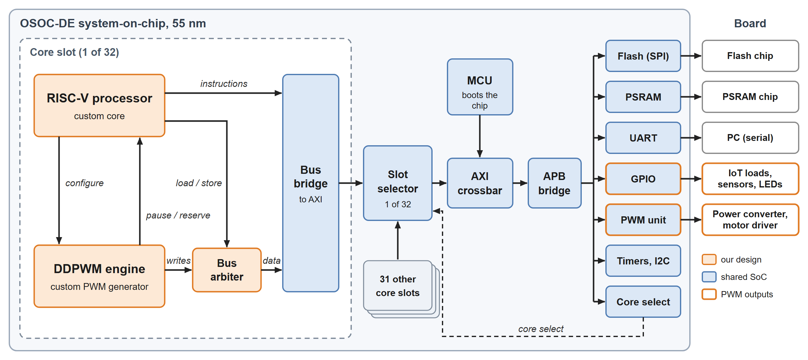
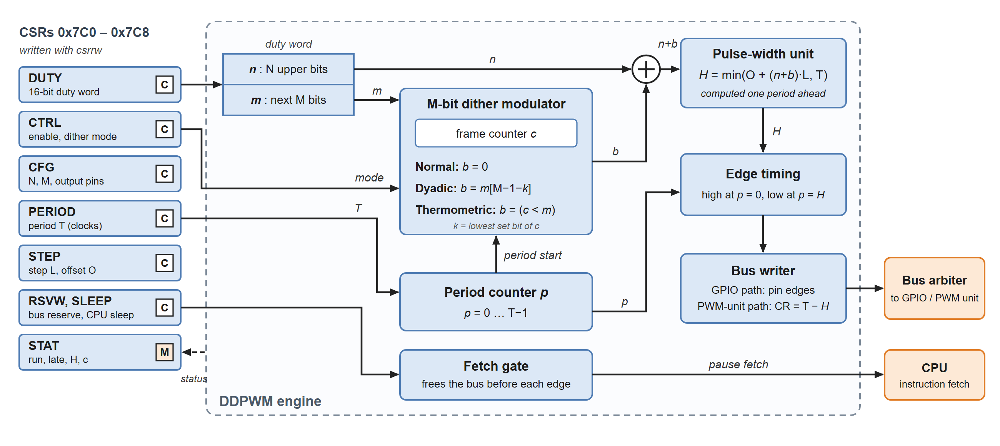
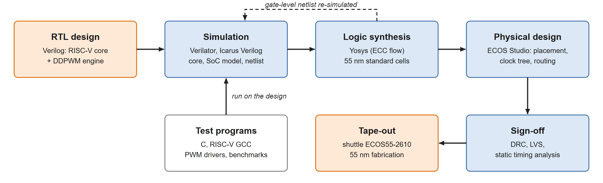
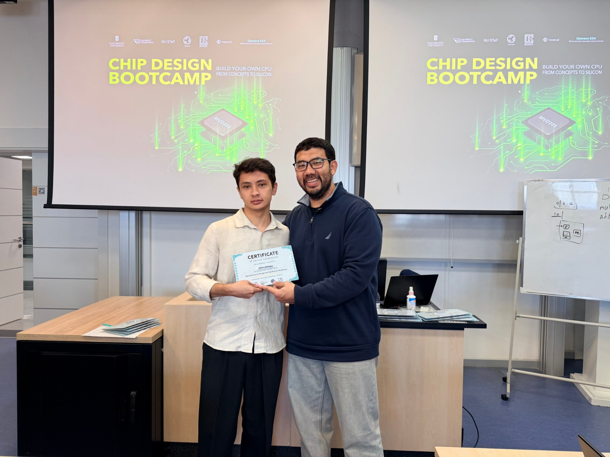

RISC-V · 55 nm · OSOC · Toshkent shahridagi Turin politexnika universiteti
Maxsus PWM generatoriga ega RISC-V mikrokontrolleri
Toshkent shahridagi Turin politexnika universitetida biz maxsus ‘Pulse Width Modulation’ (PWM) generatoriga ega RISC-V mikrokontrollerini loyihalashtirdik va uni 55 nm CMOS texnologiyasi asosida ishlab chiqarishga topshirdik. Chip kam quvvat isteʼmol qiluvchi IoT qurilmalari va raqamli boshqariladigan quvvat elektronikasi uchun moʻljallangan. Bizning maʼlumotlarimizga koʻra, bu Oʻzbekistonda loyihalashtirilib, ishlab chiqarishga topshirilgan birinchi maxsus mikrokontrollerdir. Chiplar 2027-yil boshida tayyor boʻlishi kutilmoqda.
Loyiha
Loyihamiz ikki qismdan iborat: RISC-V protsessor yadrosi va uning yonida qurilgan apparat PWM generatori (1-rasm). Ikkalasini uchun ham kod Verilogda noldan yozilgan. Protsessor standart RISC-V GCC orqali kompilyatsiya qilingan C dasturlarini bajaradi. Generator quvvat oʻzgartirgichi, motor drayveri yoki LED drayveri uchun kerakli signallarni hosil qiladi. Protsessor uni sozlab bergach, generator har bir siklda mustaqil ishlaydi, protsessor esa faqat boshqaruv konturi talab qilganda ‘duty cycle’ ni yangilaydi.
Loyihamiz 55 nm OSOC-DE SoC dagi 32 ta slotdan birini egallaydi. Xotira va periferiya qurilmalarini chipning oʻzi taqdim etadi: yuklash kodi uchun SPI flesh, dasturlar uchun PSRAM, UART konsoli, GPIO pinlari, toʻrt kanalli PWM bloki, taymerlar va I2C. Kichik boshqaruv mikrokontrolleri (MCU) chipni ishga tushiradi va faol yadroni tanlaydi. Bizning slot tanlanganda chip yadromiz va PWM generatorimiz asosidagi toʻliq mikrokontrollerga aylanadi.

PWM generatori
Raqamli boshqariladigan DC-DC konverterlar yuqori PWM aniqligini talab qiladi. Aniqlik yetarli boʻlmasa, chiqish kuchlanishida chegaraviy sikllar (limit cycles) paydo boʻlishi mumkin: bular boshqaruv konturi bartaraf eta olmaydigan kichik, doimiy tebranishlardir. Oddiy raqamli PWM aniqligini bir bitga oshirish uchun takt chastotasini ikki barobar oshirish kerak, yuqori chastota esa koʻproq quvvat sarflaydi.
Generatorimiz Crovetti, Usmonov, Musolino va Gregoretti taklif qilgan diadik raqamli PWM (DDPWM) ni implementatsiya qiladi [1]. ‘Duty cycle’ soʻzi N ta yuqori bit n va M ta quyi bit m ga ajratiladi. Har bir kalitlash davrida impuls kengligi n yoki n + 1 qadamga teng boʻladi. Ditering modulyatori qoʻshimcha b bitini shunday tanlaydiki, 2^M davrdan iborat freym davomida oʻrtacha impuls kengligi toʻliq N + M bitli qiymatga teng boʻladi. [1] ishda 100 kHz chastotada ishlovchi pasaytiruvchi (buck) oʻzgartirgichda 3,2 MHz takt chastotali 5 bitli raqamli PWM 46 mV lik chegaraviy sikllarni koʻrsatgan. Xuddi shu 3,2 MHz chastotada N = 5 va M = 4 boʻlgan DDPWM esa ulardan xoli boʻlgan. Xuddi shunday aniqlikka erishish uchun oddiy 9 bitli PWM 51 MHz takt chastotasini talab qiladi.
2-rasmda ushbu usulni apparat darajasida qanday amalga oshirganimiz koʻrsatilgan. Protsessor generatorni toʻqqizta maxsus boshqaruv va holat registrlari (CSR 0x7C0–0x7C8) orqali sozlaydi. N ni 2 dan 12 gacha, M ni esa 0 dan 8 gacha belgilash mumkin. Ditering modulyatori uch rejimga ega: oddiy (diteringsiz), diadik ([1] dagi kabi) va termometrik. Har bir impuls kengligini siljitish-qoʻshish (shift-add) koʻpaytirgichi bir davr oldin hisoblab qoʻyadi. Generator shinadan protsessor bilan birgalikda foydalangani uchun, har bir kalitlash frontidan oldin buyruq tanlash shlyuzi (fetch gate) protsessorning buyruq oʻqishini qisqa vaqtga toʻxtatib turadi. Shu tufayli generatorning yozuvi doimo oʻz vaqtida bajariladi. Shuningdek, protsessor belgilangan sondagi davrlar davomida uyqu rejimiga oʻtishi mumkin, bu esa generator ishlayotganda shinani boʻsh qoldiradi.

Loyihadan kremniygacha
Loyihani Verilator va Icarus Verilog yordamida uch darajada tekshirdik: yadroning oʻzi, toʻliq chipning simulyatsiya modeli ichidagi yadro va sintezdan keyingi ventil darajasidagi netlist. C tilidagi test dasturlari buyruqlarni, PWM generatorini va umumiy chipning haqiqiy yuklanish ketma-ketligini sinovdan oʻtkazdi. Soʻngra Yosys loyihani 55 nm standart yacheykalarga akslantirdi, ECOS Studio esa ularni joylashtirdi va trassirovka qildi (3-rasm). Yakuniy topologiya taxminan 7 450 ta yacheykadan iborat boʻlib, ulardan 1 560 tasi trigger (flip-flop), kristall oʻlchami esa 214,6 × 215,4 µm. Loyiha barcha 31 ta yakuniy tekshiruvdan (sign-off) muvaffaqiyatli oʻtdi, jumladan dizayn qoidalarini tekshirish (DRC), topologiya va sxema mosligini tekshirish (LVS) hamda statik vaqt tahlilidan (STA).

Boshlang’ich nuqta
Ushbu loyiha 2026-yil 17–30-avgust kunlari Astanadagi Nazarbayev universitetida professor Nursultan Kabylkas tashkil etgan Chip Design Bootcamp intensiv oʻquv kursida boshlangan. Kurs One Student One Chip (OSOC) dasturining bir qismi boʻlib, unda talabalar protsessorni noldan loyihalashtiradi va uni ishlab chiqarishgacha olib boradi. Yadroni Toshkent shahridagi Turin politexnika universitetida yakunladik va Maqsud Usmonov bilan birgalikda uni PWM generatori bilan kengaytirdik.

Keyingi qadamlar
Loyiha OSOC dasturi orqali ECOS55-2610 shuttle partiyasiga topshirildi. Bunday partiyada koʻplab loyihalar bitta kremniy plastinasida birgalikda ishlab chiqariladi. Hozir loyiha ishlab chiqaruvchi tomonidan koʻrib chiqilmoqda. Chiplar 2027-yil boshida tayyor boʻlishi kutilmoqda. Ular qoʻlimizga yetib kelgach, mikrokontrollerni sinov platasida ishga tushiramiz, unda dasturlarni bajaramiz va PWM generatorini real DC-DC konverterda sinab koʻramiz.
Minnatdorchilik
Loyiha davomida ilmiy rahbarlik qilgani va PWM generatori gʻoyasini taklif etgani uchun Toshkent shahridagi Turin politexnika universitetidan Maqsud Usmonovga; Astanadagi Nazarboyev universitetida chip loyihalash bootcampini tashkil etgani uchun professor Nursultan Kabylkasga; oʻquv kursi va ishlab chiqarishga topshirish imkoniyati uchun professor Zihao Yu va One Student One Chip jamoasiga; loyihalash vositalari va shuttle partiyasi uchun ECOS jamoasiga minnatdorchilik bildiramiz.
Adabiyotlar
[1] P. S. Crovetti, M. Usmonov, F. Musolino and F. Gregoretti, "Limit-cycle-free digitally controlled DC–DC converters based on dyadic digital PWM," IEEE Transactions on Power Electronics, vol. 35, no. 10, pp. 11155–11166, Oct. 2020.